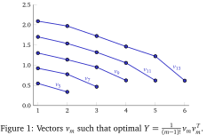

Still open in most cases, including asymptotically!
| $n$ | Old bound | New bound | $Z(n,n)$ |
|---|---|---|---|
| $10$ | $348$ | $388$ | $400$ |
| $11$ | $581$ | $589$ | $625$ |
| $12$ | $846$ | $865$ | $900$ |
| $13$ | $1192$ | $1229$ | $1296$ |
Let $\{1,\ldots,m\}$ and $\{b_1,\ldots,b_n\}$ be the sides of the bipartition of $K_{m,n}$. Given a drawing of $K_{m,n}$, define for each vertex $b_i$:
$$\scriptsize\gamma(b_i) :=\text{ the cyclic order in which edges from $b_i$ go to $\{1,\ldots,m\}$}$$ $$\scriptsize\color{red}\gamma(b_1)=(1 4 5 2 3)$$
$\#$crossings of edges incident with $b_i$ and $b_j$ $\geq$
min. $\#$swaps of adjacent elements of $\gamma(b_i)$ to change $\gamma(b_i)$ into
$\gamma(b_j)^{-1}$.
$\gamma(b_2) = (1 2 3 4 5)$
$\gamma(b_1)^{−1} =
(14523)^{−1} =
(13254)$.
Min. #swaps of adjacent elements is $2$.
Let $Z_m$ be the set of $m$-cycles, and $Q \in \mathbb{Z}^{Z_m\times Z_m}$, where $$\scriptsize Q_{\sigma,\tau} := \text{min. $\#$swaps of adjacent elements to change $\sigma$ into $\tau^{-1}$}$$
$$\scriptsize\displaystyle\begin{align*}
\mathrm{cr}(G) &\geq \min_{\gamma} \sum_{i < j}Q_{\gamma(i),\gamma(j)}\\ & \geq
\tfrac{1}{2}n^2{\color{blue}q_m} - \tfrac{1}{2} n \lfloor \tfrac{1}{4} (m-1)^2\rfloor, \end{align*} $$
where $\scriptsize{\color{blue}q_m} :=\min \left\{x^T Q x \,\, | \,\, x \in \mathbb{R}^{Z_m}_{\geq 0},
\, e^T x=1 \right\} $
We relax $$\scriptsize{\color{blue}q_m} :=\min \left\{x^T Q x \,\, | \,\, x \in \mathbb{R}^{Z_m}_{\geq 0}, \, e^T x=1 \right\} $$ to a semidefinite programming problem $$\scriptsize {\color{blue}q_m} \geq {\color{red}\alpha_m} \hspace{-1pt}:=\hspace{-1pt} \min \{\langle X, Q \rangle \, | \, X \in \mathbb{R}^{Z_m \times Z_m}_{\geq 0},\, \langle X, J \rangle =1,\, X \succcurlyeq 0\}.$$
Problem:$|Z_m|=(m-1)!$
Let $G_m := S_m \times \{+1,-1\}$ act on $Z_m$ via $$(\pi,\varepsilon)\cdot \sigma := \pi \sigma^\varepsilon\pi^{-1}.$$
Let $G_m := S_m \times \{+1,-1\}$ act on $Z_m$ via $$(\pi,\varepsilon)\cdot \sigma := \pi \sigma^\varepsilon\pi^{-1}.$$
Then, for every $g\in G_m$: $$(g(Q))_{\sigma,\tau} = Q_{g(\sigma), g(\tau)} = Q_{\sigma,\tau}.$$
Let $G_m := S_m \times \{+1,-1\}$ act on $Z_m$ via $$(\pi,\varepsilon)\cdot \sigma := \pi \sigma^\varepsilon\pi^{-1}.$$
Then, for every $g\in G_m$: $$(g(Q))_{\sigma,\tau} = Q_{g(\sigma), g(\tau)} = Q_{\sigma,\tau}.$$
Main idea: If $X$ is feasible for $\color{red}\alpha_m$, then so is $g(X)$. By convexity we can average an optimal solution to obtain an invariant optimal solution.
Main idea: If $X$ is feasible for $\color{red}\alpha_m$, then so is $g(X)$. By convexity we can average an optimal solution to obtain an invariant optimal solution.
The algebra of $G_m$-invariant matrices can be block-diagonalized (by Artin-Wedderburn theory):
[De Klerk, Pasechnik, Schrijver 2007]: Computed $\color{red}\alpha_8$, $\color{red}\alpha_9$ using the regular representation.
Regular representation: One block of size $k\times k$, where $$k=|(Z_m \times Z_m)/G_m|$$ is the number of orbits of pairs.
Regular representation: One block of size $k\times k$, where $$k=|(Z_m \times Z_m)/G_m|$$ is the number of orbits of pairs.
Full symmetry reduction: Many blocks of sizes $m_1, m_2,\ldots$, with $$\sum m_i^2 = k.$$
Idea: Embed $\mathbb{C}^{Z_m}$ into a bigger, well understood module: $$M^{(1^m)} \twoheadrightarrow M^{(1^m)}/_{\mathbb{Z}/m\mathbb{Z}} \simeq \mathbb{C}^{Z_m},$$ where $M^\mu$ denotes a permutation module.
My thesis: Efficient algorithm to explicitely compute the Reynolds operator $\mathcal{R}^\lambda \in \mathbb{Z}^{m_i\times m_i}$ of groups $G$ on the semistandard basis of $\mathrm{hom}(S^\lambda, M^\mu)$, i.e. $$\mathrm{Im}(\mathcal{R}^\lambda)\simeq \mathrm{hom}(S^\lambda, M^\mu/_G).$$
Then we can choose a column-spanning set of basis elements!
But the relaxation still grows too quickly, we can only compute $\color{red}\alpha_{10}$.
We solve the dual of $\color{green}\beta_m$: few variables, small matrix block and (exponentially) many linear inequalities.
Double counting: Improved bounds for $K_{m,n}$ for $m>13$, and asymptotic bounds.
$${\lim_{n \to \infty} \frac{\mathrm{cr}(K_{n,n})}{Z(n,n)} \geq {\frac{8 {\color{red}\alpha_k}}{k(k-1)}}}$$
| $k$ | $\frac{8 {\color{red}\alpha_k}}{k(k-1)}$ | $\frac{8 {\color{green}\beta_k}}{k(k-1)}$ |
|---|---|---|
| $7$ | $0.8303$ | $0.8210$ |
| $8$ | $0.8371 $ | $0.8326$ |
| $9$ | $0.8595$ | $0.8503$ |
| $10$ | $0.8659$ | $0.8610$ |
| $11$ | $0.8726$ | |
| $12$ | $0.8794$ | |
| $13$ | $0.8878$ |
If $m$ is odd, the (numerical) optimal solution of $\beta_m$ is of rank 1. The eigenvectors seem to follow a pattern. Can we guess it?
